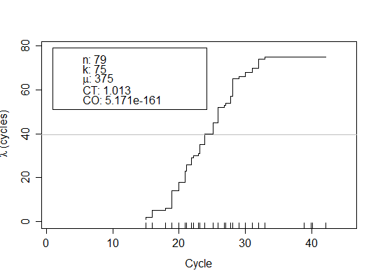

qdpcr objectsqdpcr object.An analytical plot describing relationship between the cycle number and the current value of Poisson mean. The plot can be used for quality control of process.
The rug parameter allows user to add density of the number of events
to the plot.
library(qpcR) test <- cbind(reps[1L:45, ], reps2[1L:45, 2L:ncol(reps2)], reps3[1L:45, 2L:ncol(reps3)]) plot(qpcr2pp(data = test, cyc = 1, fluo = NULL, model = l5, delta = 5), rug = TRUE)
qdpcr